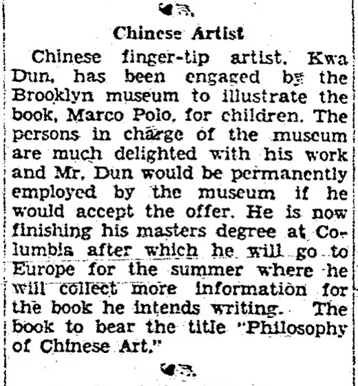

Kwei Dun a.k.a. Kwei Teng at Brooklyn Museum
访问原网页 ↗Visit original website ↗

S032 · Alex Jay / Chinese American Eyes · 2013-08；所收史料1929
保存布鲁克林展讯及博物馆新闻稿文字，含马可波罗场景制作与早期教育记录。Preserves Brooklyn exhibition notices and museum publicity concerning a Marco Polo scene and early education.
馆藏图像与原文Archived images and documents
- 1929-05-12 Chinese Artist 剪报1929-05-12 Chinese Artist 剪报 I032
- 1929-05-26 Brooklyn Museum展讯1929-05-26 Brooklyn Museum展讯 I033


来源页摘录Source-page excerpt
Chinese American Eyes: Kwei Dun a.k.a. Kwei Teng at the Brooklyn Museum
Kwei Dun a.k.a. Kwei Teng at the Brooklyn Museum
原始网址Original URL
https://chimericaneyes.blogspot.com/2013/08/kwei-dun-aka-kwei-teng-at-brooklyn.html